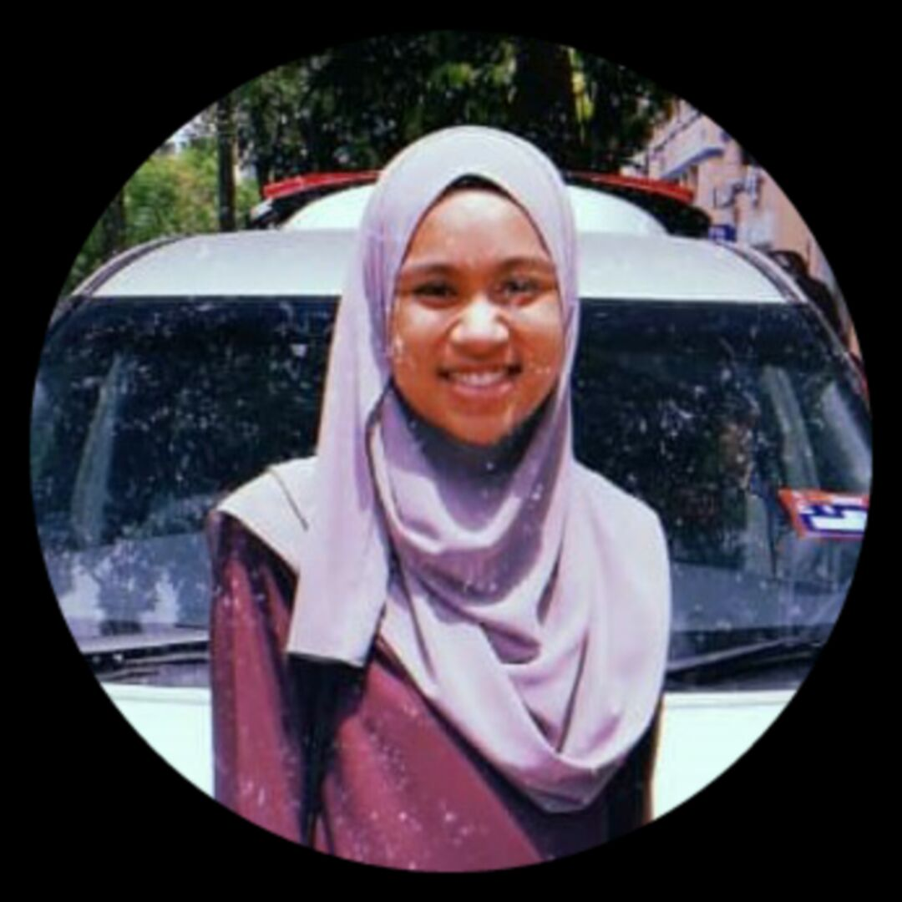

| 
My name is Seri Khairani Binti Norazmi. I am a Malaysian. I live in Puncak Alam. I am 20 years old. I was born on 24th October 2000 at Hospital Besar Melaka. I am the second child of four in my family. I have a brother and 2 younger sisters. I love my siblings and my parents dearly and they love too. Although, my brothers monitor my every move which can be quite annoying sometimes. However, I know they have my back whenever I am in trouble. I am currently a full time student of Diploma of Library Management in UiTM Merbok, Kedah. My professional aspiration is to obtain a bachelor’s degree in any information related course at the university, which would promote my career goal of being a librarian. The reason why I want to pursue a degree in the information line is to someday be able to provide a good and trusted information to a magnitude of people in Malaysia. Hence, I study hard because without a degree I cannot attain these goals. Aside my love for everything information related, I love to listen to music and meet new people. I am an outgoing person and I love to have fun. I am always looking for ways to develop my skills and learn new things not just in university but outside the university environment. Most of the people I associate with I met with while on the lookout for ways to advance my skills. |